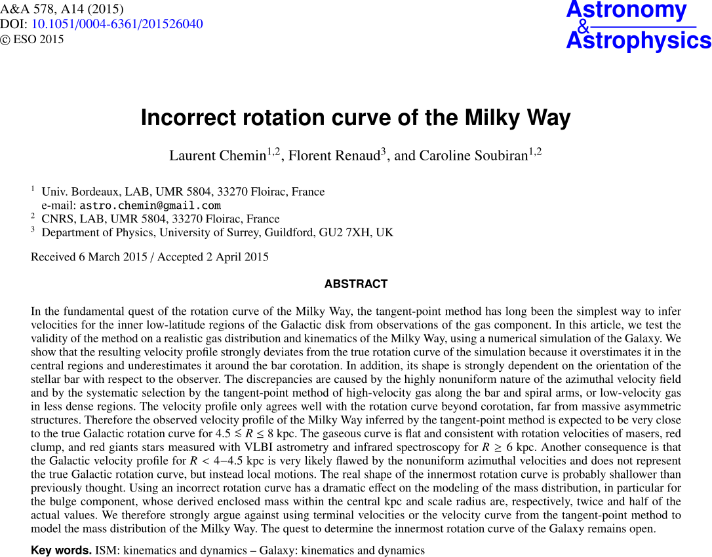
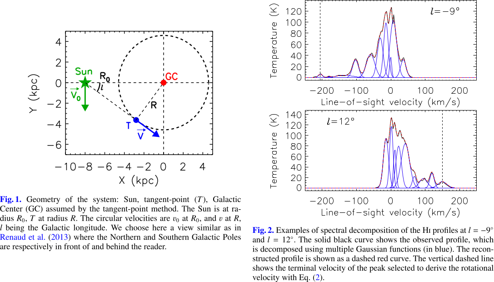
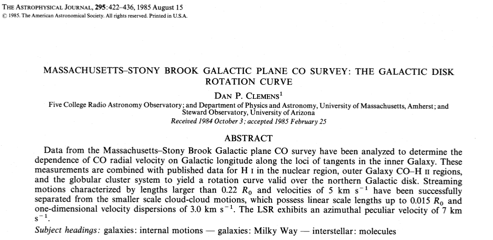
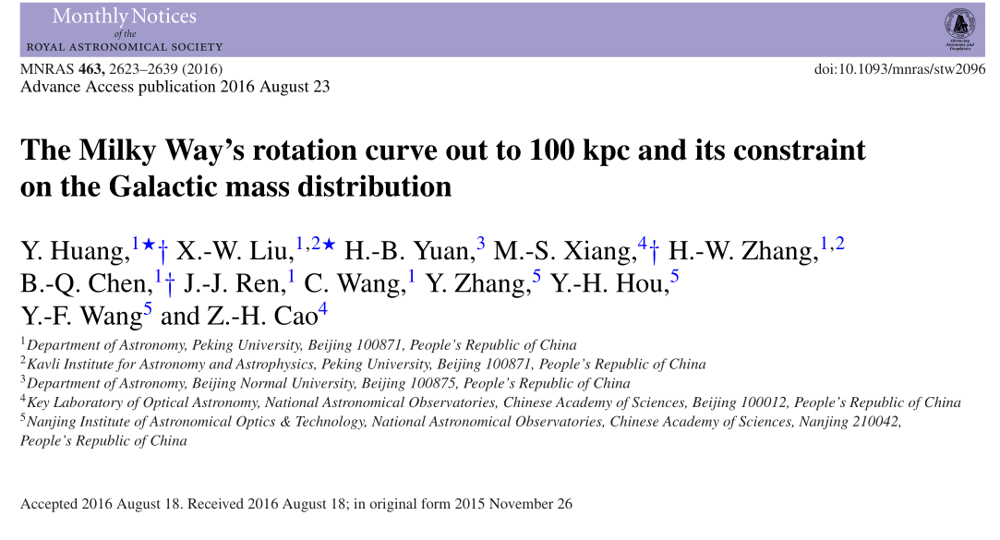
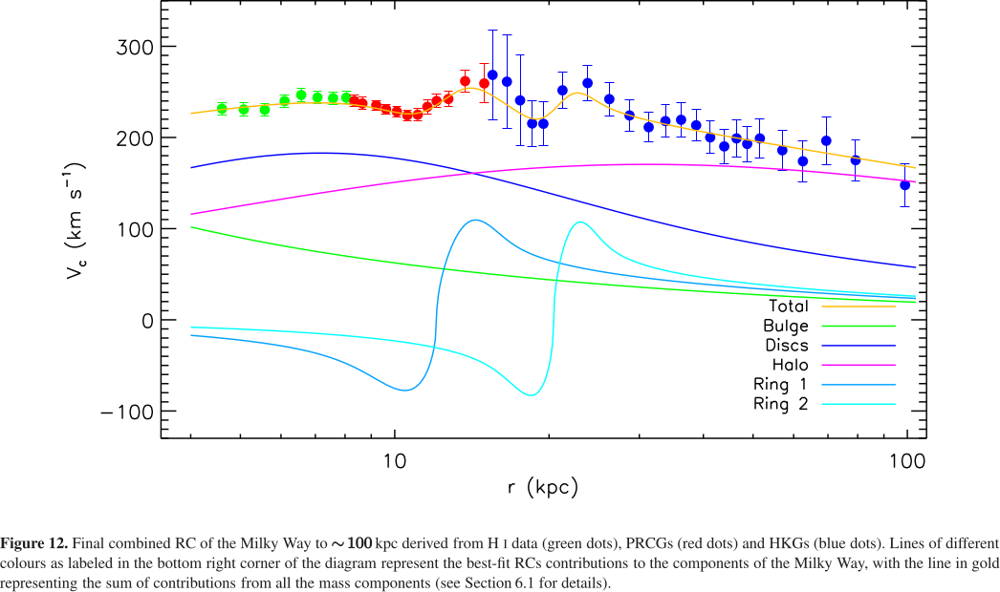
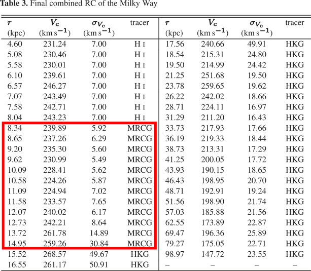
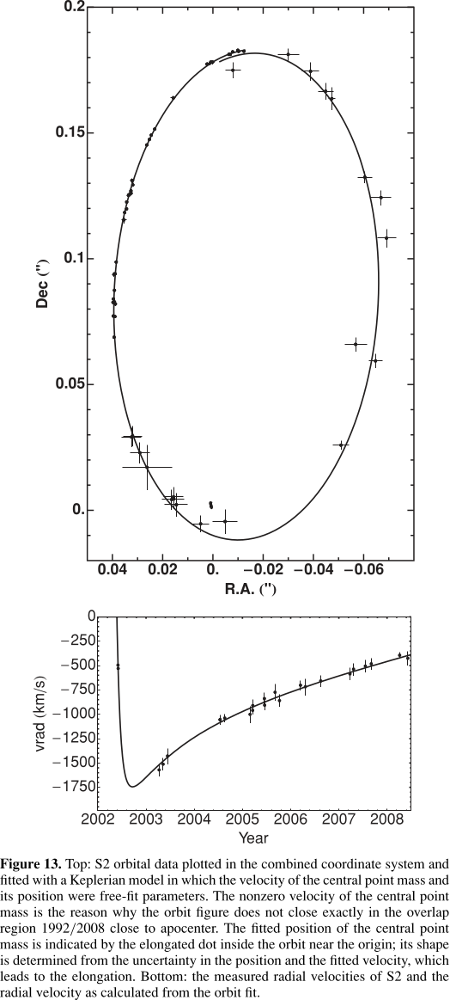

Latitudine (b): Chioma di Berenice
verso b=+90^\circ; Scultore verso b=-90^\circ.
Longitudine: come l’ascensione retta.
Aspetto esterno della Via Lattea
Abbiamo l’evidenza che esistano galassie con bracci avvolti in
spirale. È così anche per la Via Lattea?
Aspetto esterno della Via Lattea
Studiando nubi molecolari giganti si intuisce che anche la Via Lattea
possieda strutture simili.
Aspetto esterno della Via Lattea
Aspetto esterno della Via Lattea
(Spitzer, 2008)
Rotazione della Via Lattea
Curva di rotazione galattica
In un sistema Kepleriano (es. Sistema Solare) il periodo orbitale
T è legato al raggio dell’orbita R dalla Terza legge:
T \approx \frac{2\pi}{\sqrt{G M_\odot}}\,R^{3/2}
(in un corpo rigido, T non
dipende da R). Siccome v = 2\pi R/T, allora
v \propto \frac1{\sqrt{R}}.
E nel caso della Via Lattea?
Curva di rotazione galattica
In una Galassia la materia non è concentrata in un punto, ma è
distribuita in una sfera di densità non uniforme.
Siccome lo studio del potenziale di una sfera non uniforme
richiede di solito metodi numerici, limitiamoci al caso in cui assumiamo
\rho uniforme: a posteriori si vede che
il risultato è qualitativamente corretto.
Curva di rotazione galattica
Per una particella di massa m in
orbita con raggio R vale che
G \frac{M(R)\,m}{R^2} = \frac{m v^2(R)}{R} \quad \Rightarrow \quad M(R)
= \frac{v^2(R)\,R}G.
Se possiamo misurare v(R),
deduciamo M(R).
Se la massa è tutta al centro, M(R) non dipende da R e si ottiene la terza legge di Keplero.
(Dimostratelo! Basta imporre M(R) = M e
v(R) = 2\pi R/T, poi si risolve per
T).
Moto proprio del Sole
La velocità del Sole ha due componenti:
Una parte è dovuta alla rotazione Galattica;
Una parte è dovuta all’interazione gravitazionale con gli oggetti ad
esso vicini.
Definiamo il local standard of rest (LSR) come il
sistema di riferimento centrato nel Sole che si muove per effetto della
sola rotazione Galattica.
Rispetto al LSR, il Sole si muove con v
= 20\,\text{km/s} nella direzione
\ell = 56^\circ, \quad b = 23^\circ.
Dalla legge dei seni:
\frac{\sin(180^\circ - {\color{#008000}
\theta})}{\color{#6A5ACD} R_0} =
\frac{\sin{\color{#6A5ACD} \ell}}{\color{#008000} R}
\quad\Rightarrow\quad \frac{\sin{\color{#008000}
\theta}}{\color{#6A5ACD} R_0} =
\frac{\sin{\color{#6A5ACD} \ell}}{\color{#008000} R}.
Velocità radiale
Il risultato finale è
\begin{aligned}
v_r &= \left( {\color{#008000} v(R)} \frac{\color{#6A5ACD}
R_0}{\color{#008000} R} - {\color{#6A5ACD} v_0}\right)
\sin{\color{#6A5ACD}\ell} \\
&= \bigl( {\color{#008000} \omega(R)} - {\color{#6A5ACD}
\omega_0}\bigr) {\color{#6A5ACD} R_0}
\sin{\color{#6A5ACD}\ell}.
\end{aligned}
Velocità radiale
La rotazione della Galassia produce anche un moto trasversale che
induce un moto proprio delle stelle. Si può vedere come esercizio che
v_T = \bigl({\color{#008000} \omega(R)} - {\color{#6A5ACD}
\omega_0}\bigr) {\color{#6A5ACD}
R_0}\cos{\color{#6A5ACD}\ell} - {\color{#008000}
\omega(R)}\,{\color{#1E90FF} d}.
Quadranti galattici
Moto di rivoluzione del Sole
La convenzione scelta dall’International Astronomical Union (IAU) per
R_0 e v_0 è
R_0 = 8.5\,\text{kpc}, \quad v_0 = 220\,\text{km/s}.
Ciò significa che il periodo dell’orbita solare è
T = \frac{2\pi R_0}{v_0} = 2.4 \times 10^8\,\text{yr} \approx
\frac1{20}\,T_\odot \approx \frac1{40}\,T_{\text{MW}},
e che la massa entro un raggio R_0 è
M_0 = \frac{v_0^2 R_0}G = 10^{11}\,M_\odot.
Curva di rotazione
È necessario studiare l’emissione di righe per misurare v_r. Una buona riga è l’emissione a 21 cm di
H.
Sono necessarie due assunzioni:
Supponiamo che le orbite siano circolari;
Supponiamo che H sia presente in tutta la Galassia (soprattutto in
prossimità del subcentral point!).
Curva di rotazione
Se le ipotesi sono verificate, si segue questo metodo:
Fissata \ell, si stima il massimo
spostamento Doppler misurato in quella direzione;
Si assegna quello spostamento Doppler a materiale nel subcentral
point, così che R = R_{\text{min}} =
R_0\,\cos(90^\circ - \ell) = R_0\,\sin\ell;
Se v_\text{max} è la massima
velocità radiale, allora
\omega(R_0\sin\ell) = \frac{v_\text{max}}{R_0\sin\ell} + \omega_0.
Curva di rotazione
Il metodo sfrutta la particolarità del subcentral point
per stabilire il valore di R associato
con v_r.
Ci sono alcuni limiti:
Se non c’è idrogeno nel subcentral point, v_{\text{max}} stimato sarà minore di quello
vero;
Orbite non circolari rendono le ipotesi non vere.
Alcuni di questi sono superabili ripetendo la misura nel I e IV
quadrante.
Curva di rotazione
Altri problemi:
Se \ell \approx 0, lo spostamento
Doppler non è misurabile;
Se \ell \approx 90^\circ, allora
\omega(R_0) \approx \omega
Il metodo funziona solo quando R <
R_0 (I e IV quadrante), altrimenti non c’è subcentral
point e bisogna stimare v e d separatamente, per poi ricavare R.


Compito per casa
Recuperate l’articolo di Chemin, Renaud & Soubiran (il preprint è
disponibile al sito http://arxiv.org/abs/1504.01507)
e leggetelo.
Curva di rotazione
Nei quadranti II e III è possibile osservare l’emissione di CO in
nubi molecolari per stimare v_r.
Se queste nubi molecolari contengono stelle, si può stimare la
distanza d delle stelle con la
parallasse spettroscopica. Da d si
ricava poi R.
Distanze e curva di rotazione
Una volta nota la curva di rotazione è possibile stimare le distanze
di oggetti ignoti:
Si misura \ell e v_r;
Si usa la formula
\omega = \frac{v_r}{R_0\,\sin\ell} + \omega_0;
Dalla conoscenza della curva \omega(R) si determina R.
Distanze e curva di rotazione
Il metodo ha due problemi:
Non funziona se la velocità orbitale è inferiore a quella casuale
indotta dagli oggetti vicini;
Se R < R_0, per ogni oggetto ci
sono due distanze possibili (tranne per il subcentral
point; inoltre questo non è vero se R
> R_0).
Curva di rotazione

Curva di rotazione
Curve di rotazione e materia oscura
La curva dell’immagine precedente resta costante a grandi R.
Questo è in disaccordo con l’ipotesi Kepleriana che v \propto 1/\sqrt{R} (vera se tutta la
materia è racchiusa entro un certo raggio R).
Ciò significa che una parte significativa della massa della Via
Lattea si trova a grandi distanze del centro.
Caratteristiche della materia oscura
Da v(R) si deduce che una parte
significativa della massa della Via Lattea è nelle regioni esterne.
Eppure la luminosità della Via Lattea decresce molto rapidamente per
R > R_0!
Ci sono varie evidenze osservative (altre galassie, cluster di
galassie, CMB, ) che portano a ipotizzare l’esistenza di materia
oscura non barionica.
Questa materia oscura è stata probabilmente decisiva per creare
la buca di potenziale in cui si è formata la Via Lattea.



L’uso di 16 000 Red Clump Giants per determinare le distanze porta a
barre di errore confrontabili tra i casi r
< 8.5\,\text{kpc} e r >
8.5\,\text{kpc}.
Il centro galattico
Studio del Centro Galattico
È impossibile osservare il CG (R <
500\,\text{pc}) nel visibile, a causa dell’estinzione della
polvere. Le bande più usate sono due:
Nel radio è visibile l’emissione continua di gas (HII) e
l’emissione di righe da nubi molecolari e molecole interstellari;
Nell’infrarosso è visibile la polvere (continuo) e gas
neutri e ionizzati (righe).
A causa della distanza (8 kpc), le osservazioni sono generalmente
di limitata risoluzione: ad es. Spitzer risolve solo strutture più
grandi di 0.1 pc.
Immagine multibanda del CG
Dimensioni: 32’×16’. Giallo: near-IR (Hubble), rosso: IR (Spitzer),
blu: X (Chandra).
Il Centro Galattico in IR
Il Centro Galattico nel Radio
Il buco nero centrale
L’ipotesi più accreditata che spieghi la dinamica delle stelle in
prossimità del centro galattico è che sia presente un buco nero centrale
(CBH) supermassivo.
Le caratteristiche del CBH possono essere dedotte dalla stessa
orbita delle stelle in sua prossimità (esse risentono più della presenza
di CBH che della rotazione galattica).
Studio del buco nero centrale
A quale distanza dal buco nero la dinamica delle stelle inizia ad
essere dominata dalla sua presenza, anziché dal moto collettivo
Galattico e da altri influssi?
Possiamo stabilire un semplice criterio osservativo per
misurare questa distanza, supponendo che essa sia la distanza r_\text{GC} a cui l’energia potenziale tra
una stella e il buco nero sia almeno uguale alla media dell’energia
cinetica di tutte le stelle a una distanza r_\text{GC}.
Studio del buco nero centrale
Eguagliando energia cinetica ed energia potenziale si ha
\frac{G M_* M_{\text{CBH}}}r = \frac12 M_*\,v_{\text{RMS}}^2,
da cui
r_\text{GC} \approx 4 \left(\frac{M_{\text{CBH}}}{10^7\,M_\odot}\right)
\left(\frac{v_{\text{RMS}}}{100\,\text{km/s}}\right)^{-2}\,\text{pc}.
Quindi r_\text{GC} \propto
v_{\text{RMS}}^{-2}.
Siccome le velocità sono dell’ordine di 100 km/s e le distanze
inferiori di 1 pc, l’equazione per r_\text{GC} ci dice che la loro dinamica è
determinata dal CBH, e non dal campo esterno.

Conclusione
Conclusione
Vi raccomando di pensare subito a dei commenti
liberi relativi a queste lezioni da inserire nei questionari della
didattica!
Domani ci sarà la lezione jolly su come si scrive un
testo scientifico.
A partire da settimana prossima, la dott.ssa Mariachiara Rossetti
(INAF di Milano) terrà una serie di lezioni sull’astrofisica
galattica.